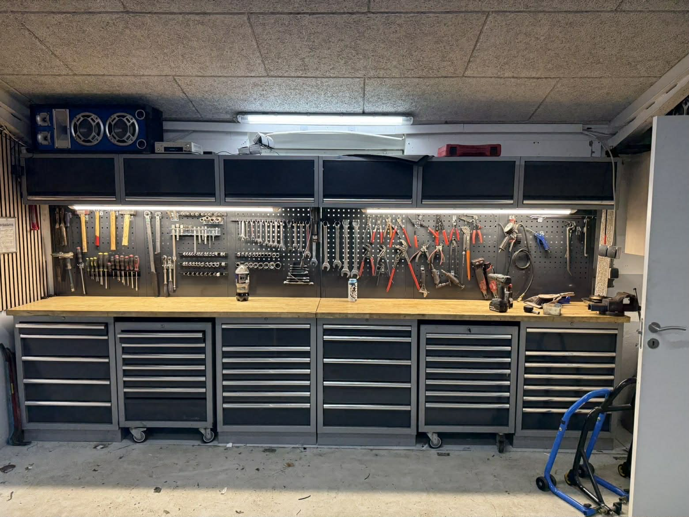

Service
Turbo kontrol når bilen mangler træk eller reagerer ujævnt
Vi vurderer turboen i sammenhæng med resten af motorens setup for en teknisk holdbar diagnose.

Hvordan foregår kontrollen?
Vi starter med at kortlægge symptomerne: manglende træk, ujævn acceleration, nødprogram eller mislyde. Derefter kontrollerer vi relevante data for ladetryk og regulering.
Turboen vurderes altid i sammenhæng med resten af systemet, herunder slanger, vakuum/aktuator, indsugning og andre dele der påvirker trykopbygningen.
På den måde finder vi den rigtige årsag, før der skiftes dele. Du får en tydelig forklaring på fund og anbefalet løsning.
Målet er en holdbar udbedring med stabil respons i stedet for en hurtig, usikker reparation.
Relateret viden om service og grundig gennemgang
Se også vores indhold om fejlfinding og fejlsøgning, service og vedligehold og klargøring før optimering.